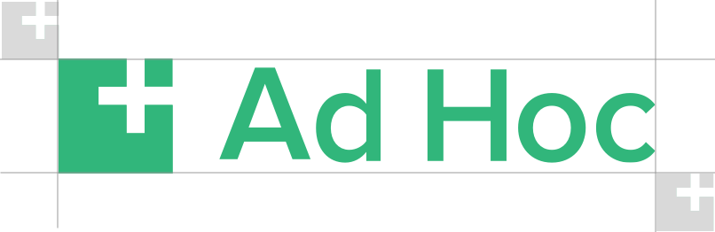
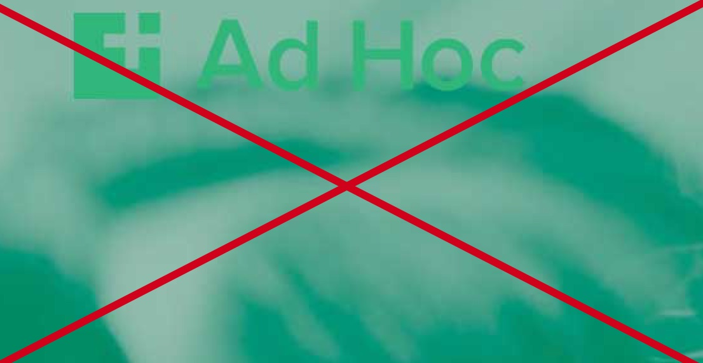
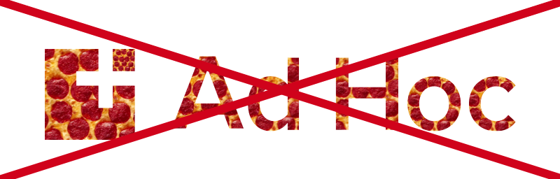
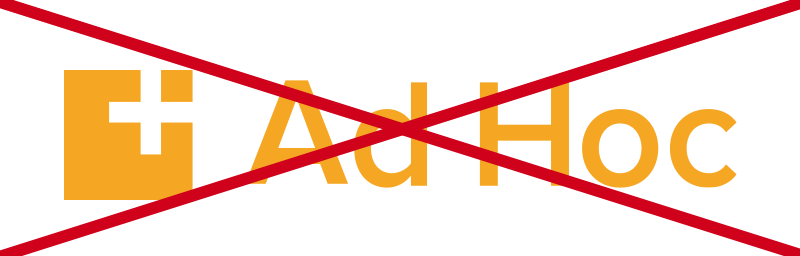

Logo usage guidelines
Use green logo when placing on a white background
White logo on green background should be used in situations where it is placed on a full green background.
Do

Don't

Use the full logo mark wherever possible, do not substite for the logo mark only
Logo mark should only be used in situations where it makes sense to add a secondary embellishment after the full logo mark has already been used, like the footer of a document.
Do
Don't

Do not squash, stretch, or otherwise scale the logo
Never resize the logo disproportianlly to fill space.
Do

Don't

Make sure adequate room is left around the logo on all sides
A space equal to half the size of the square logo mark should be left around all sides of the logo.

Do not overlay the logo on top of a photo, unless using behind a grey or duotoned image
If in doubt, place the logo on a white background and insert an image below.
Do
Don't

Do not create a pattern to fill the logo
No pizza, no avocado and definately no guacamole.

Do not recolor the logo to match content
If in doubt, use the monochrome logo or green on white version. Do not try to blend into unique color scenarios.



{kind=link}
{kind=link}
{kind=link}
{kind=link}
{kind=link}
{kind=link}